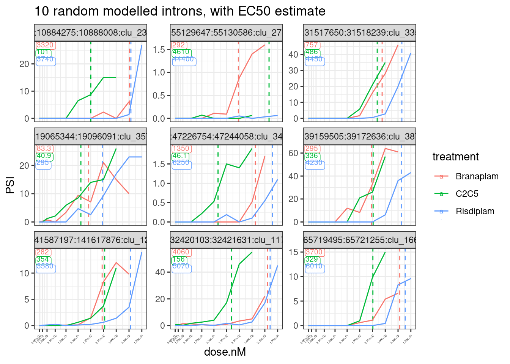
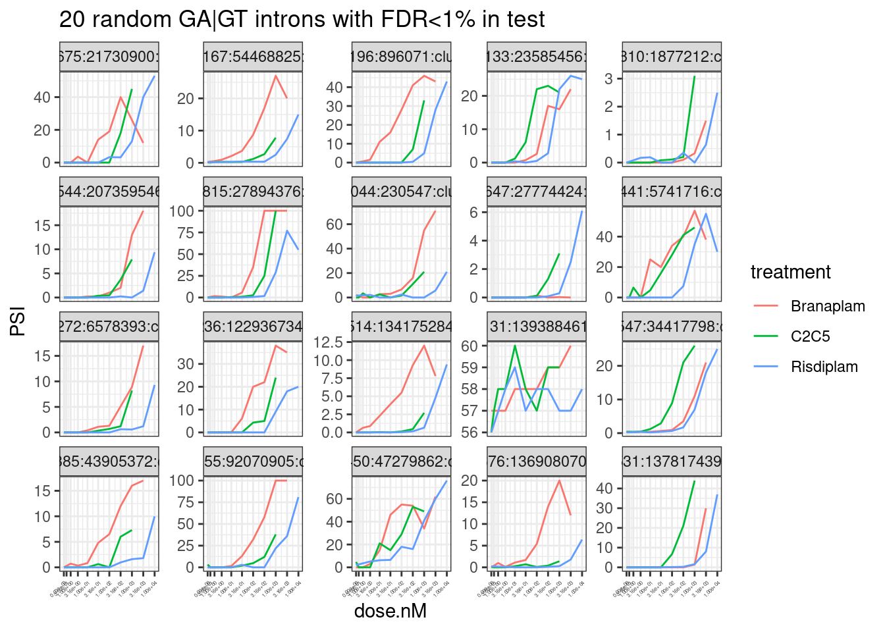

Last updated: 2022-09-14
Checks: 5 2
Knit directory: 20211209_JingxinRNAseq/analysis/
This reproducible R Markdown analysis was created with workflowr (version 1.6.2). The Checks tab describes the reproducibility checks that were applied when the results were created. The Past versions tab lists the development history.
The R Markdown file has unstaged changes. To know which version of the R Markdown file created these results, you’ll want to first commit it to the Git repo. If you’re still working on the analysis, you can ignore this warning. When you’re finished, you can run wflow_publish to commit the R Markdown file and build the HTML.
Great job! The global environment was empty. Objects defined in the global environment can affect the analysis in your R Markdown file in unknown ways. For reproduciblity it’s best to always run the code in an empty environment.
The command set.seed(19900924) was run prior to running the code in the R Markdown file. Setting a seed ensures that any results that rely on randomness, e.g. subsampling or permutations, are reproducible.
Great job! Recording the operating system, R version, and package versions is critical for reproducibility.
Nice! There were no cached chunks for this analysis, so you can be confident that you successfully produced the results during this run.
Using absolute paths to the files within your workflowr project makes it difficult for you and others to run your code on a different machine. Change the absolute path(s) below to the suggested relative path(s) to make your code more reproducible.
| absolute | relative |
|---|---|
| /project2/yangili1/bjf79/20211209_JingxinRNAseq/code/bigwigs/unstranded/(.+?).bw | ../code/bigwigs/unstranded/(.+?).bw |
Great! You are using Git for version control. Tracking code development and connecting the code version to the results is critical for reproducibility.
The results in this page were generated with repository version d9999f1. See the Past versions tab to see a history of the changes made to the R Markdown and HTML files.
Note that you need to be careful to ensure that all relevant files for the analysis have been committed to Git prior to generating the results (you can use wflow_publish or wflow_git_commit). workflowr only checks the R Markdown file, but you know if there are other scripts or data files that it depends on. Below is the status of the Git repository when the results were generated:
Ignored files:
Ignored: .DS_Store
Ignored: .Rhistory
Ignored: .Rproj.user/
Ignored: ._.DS_Store
Ignored: analysis/.RData
Ignored: analysis/.Rhistory
Ignored: analysis/20220707_TitrationSeries_DE_testing.nb.html
Ignored: code/.DS_Store
Ignored: code/._.DS_Store
Ignored: code/._DOCK7.pdf
Ignored: code/._DOCK7_DMSO1.pdf
Ignored: code/._DOCK7_SM2_1.pdf
Ignored: code/._FKTN_DMSO_1.pdf
Ignored: code/._FKTN_SM2_1.pdf
Ignored: code/._MAPT.pdf
Ignored: code/._PKD1_DMSO_1.pdf
Ignored: code/._PKD1_SM2_1.pdf
Ignored: code/.snakemake/
Ignored: code/5ssSeqs.tab
Ignored: code/Alignments/
Ignored: code/ChemCLIP/
Ignored: code/ClinVar/
Ignored: code/DE_testing/
Ignored: code/DE_tests.mat.counts.gz
Ignored: code/DE_tests.txt.gz
Ignored: code/Fastq/
Ignored: code/FastqFastp/
Ignored: code/FragLenths/
Ignored: code/Meme/
Ignored: code/Multiqc/
Ignored: code/OMIM/
Ignored: code/OldBigWigs/
Ignored: code/QC/
Ignored: code/Session.vim
Ignored: code/SplicingAnalysis/
Ignored: code/TracksSession
Ignored: code/bigwigs/
Ignored: code/featureCounts/
Ignored: code/geena/
Ignored: code/igv_session.template.xml
Ignored: code/igv_session.xml
Ignored: code/log
Ignored: code/logs/
Ignored: code/rules/.RNASeqProcessing.smk.swp
Ignored: code/scratch/
Ignored: code/test.txt.gz
Ignored: code/testPlottingWithMyScript.ForJingxin.sh
Ignored: code/testPlottingWithMyScript.ForJingxin2.sh
Ignored: code/testPlottingWithMyScript.ForJingxin3.sh
Ignored: code/testPlottingWithMyScript.ForJingxin4.sh
Ignored: code/testPlottingWithMyScript.sh
Ignored: data/._Hijikata_TableS1_41598_2017_8902_MOESM2_ESM.xls
Ignored: data/._Hijikata_TableS2_41598_2017_8902_MOESM3_ESM.xls
Ignored: output/._PioritizedIntronTargets.pdf
Unstaged changes:
Modified: analysis/20220913_TidyDataForJingxin.Rmd
Modified: code/scripts/GenometracksByGenotype
Modified: output/EC50Estimtes.FromPSI.txt.gz
Modified: output/PSI.ForGAGTIntrons.tidy.txt.gz
Note that any generated files, e.g. HTML, png, CSS, etc., are not included in this status report because it is ok for generated content to have uncommitted changes.
These are the previous versions of the repository in which changes were made to the R Markdown (analysis/20220913_TidyDataForJingxin.Rmd) and HTML (docs/20220913_TidyDataForJingxin.html) files. If you’ve configured a remote Git repository (see ?wflow_git_remote), click on the hyperlinks in the table below to view the files as they were in that past version.
| File | Version | Author | Date | Message |
|---|---|---|---|---|
| Rmd | d9999f1 | Benjmain Fair | 2022-09-13 | added more EC50 estimation with PSI |
| html | d9999f1 | Benjmain Fair | 2022-09-13 | added more EC50 estimation with PSI |
An email correspondance from Jingxin
Hi Ben, Thanks for the work! Very good! I would like to clarify that there are two separate research aims here. (1) For cloning, we need to select important genes and the splice site coordinates, such as the 10 genes you identified from the fibroblast data. The selectivity in chemical scaffolds is somewhat less important because either branaplam or risdiplam should be ok for drug development. (2) For the mechanistic study, we won’t clone every gene; in contrast, we will play the number game and need as many sequences of differentially spliced splice site/introns/exons as possible. For example, you point out that my previous analysis may be biased by the natural abundance of some 5’ ss sequences. We need more data to disprove or prove the hypothesis. We will start from these 21 introns now, but the number is still on the low end. Do you think there are not too many genes beyond these 21 introns? I thought there should be ~ 100 of genes with good sequencing quality. To me, an 8-fold difference is quite large already. Do you think we can generate a lot more “hits” by reducing this filter and keeping the rest? I also want you to know that you are not alone. If you have a list of coordinates we can manually go through the list of the genes - just let me know what we can help.
… to which I replied:
Hi Jingxin, Yeah, I also was assuming that you were looking for some disease-relevant splice junctions and also branaplam-specific or risdiplam-specific splice junctions for purposes of validation in minigenes. But yes I agree that in order to maximize power to discover the mechanisms of specificity, it will be advantageous to include as many splice sites as possible in our analyses. There are certainly more risdiplam-specific or branaplam specific splice junctions than the 21 I shared with you. So I can share a bigger list with you. I don’t think it would take up too much of my time, and I wouldn’t want to be a limiting factor if you all are anxious to explore the data. So here is what I propose I do - I think this is a reasonable compromise between my time and giving you more from this data, from which you can further explore your own ideas: I will fit a model to estimate EC50 for all GA|GT splice junctions that are reasonably present in the LCL data. The model-fitting process is something that I am still perfecting, so I think the EC50 estimates I can share with you quickly (ie today or tomorrow) might be slightly different than the final EC50 estimates that I would ideally want to use in a final analysis for publication - but for now, using the model-fitting process I used in my notebook link I shared, I think that the EC50 estimates are good enough to be useful for some downstream exploratory analyses. I’ll share you a table with raw splice junction counts for each sample and other metadata (eg 5’ss sequence, intron coordinates, AS intron type, etc) for each intron I’ll share a globus link so you can download bam files or bigwig files for easily browsing the raw aligned RNA-seq data in IGV genome browser. Globus is a service to make it easy to transfer large data files. I think you will need to make sure you (or Junxing or whoever wants to download the data) has an account that you can log into first (https://crc.ku.edu/hpc/storage/globus), then I can share a link to your account email for you to download these large files. I have been looking at this raw coverage data for each of the 21 splice events I shared with you, but I was only that careful because I thought you were cloning these things which I know can be a lot of work, and I wanted to be 100% sure the splicing event you were cloning was a simple/interpretable cassette exon. For downstream analyses to uncover mechanisms, it may not be necessary to be so careful, but nonetheless I figure browsing the raw coverage files can be very useful and worth sharing. How does that all sound.
So in here I will do that data tidying, including modelling and estimating EC50 for all GA|GT introns. As in my previous notebook, I will fit a 4-parameter model jointly with all three treatments, fixing the same upper and lower limit parameters, as well as the same slope parameter, and only allowing the EC50 parameter to vary. This is a tutorial I found useful to understand details about fitting these models with drc package. I will use PSI as the response. In some sense, this may be unideal, and using the log-transformed junction excision ratio with a small pseudocount might be better for the future, to keep errors more normally distributed and reasonable heterskedasticity. But PSI is easily interpretable and also, from my experience fitting these models to gene expression with logCPM versus CPM, I think these various possibly transforms of the response variable won’t bias or make much difference to the EC50 parameter estimate - it’s really the standard error that is sensitive to these things. So for simplicity, interpretabiliy, and so I can quickly copy/paste some code, I will keep using PSI as the response variable.
Before I get to modelling, let me first give you a quick tour of useful files that will be accessible to those with a globus link, as many of these files are not tracked to this repository on github because of file size constraints for uploading to github…
code/SplicingAnalysis/leafcutter_all_samples/JuncCounts.table.bed.gz: this file is a intron by sample matrix of splice junction read counts in each sample. This could be useful for calculating an intron excision ratio, or PSI, or counting how common a particular splice junction is. Not that the file is tabix indexed for use with tabix from samtools. So for example, to quickly jump to a particular locus from the command line:tabix -h code/SplicingAnalysis/leafcutter_all_samples/JuncCounts.table.bed.gz chr1:10000-11000Or you could of course just read in the whole file with python, R, excel, or whatever. The 5th column is the leafcutter cluster ID of the intron. See Figure1 of leafcutter paper for a description of what that means…
code/SplicingAnalysis/leafcutter_all_samples/PSI.table.bed.gz is basically the same file but the numbers for each cell are an intron-centric version of PSI, calculated as \(\frac{JunctionCount}{\sum_{n = 1}^{n}JunctionCount}\) for all \(n\) Junctions within a cluster for each sample.
code/Alignments/STAR_Align/*/Aligned.sortedByCoord.out.bam are the bam files for each sample
code/bigwigs/unstranded/*.bw are bigwig coverage files for each sample. These are a quicker, more memory efficient way of browsing coverage data in genome browsers like IGV, but they only contain information on per-base coverage in each sample, not individual reads or splice junctions.
code/bigwigs/stranded/*.bw are similarly bigwig coverage files but for samples that used a stranded library prep protocol (eg all the LCL data), there is a separate plus strand file and a minus strand file for reads mapping to each strand.
code/bigwigs/BigwigList.tsv is a file that implicitly contains a mapping of the sample names used to name files in the bigwig and bam folders, to their respective metadata, as the first column is systematically named as [treatment][nanomolar.dose][cell.line][RNA.type][replicate.number], and the second column contains a filepath /project2/yangili1/bjf79/20211209_JingxinRNAseq/code/bigwigs/unstranded/*.bw where * is the sample name used to name files in the bigwig and bamfile folders
code/code/SplicingAnalysis/FullSpliceSiteAnnotations/ is a folder that contains some useful splice site annotations for all detected junctions across any experiment. Note that the PSI and junctionCount count tables listed above are just a subset of intron detected across the experiments (filtered by the default leafcutter settings for minimum junction detection when assigning cluster IDs to introns), whereas the files in here contain a line for every splice junction identified with at least one read count in any sample across the fibroblast and LCL experiments. The code/SplicingAnalysis/FullSpliceSiteAnnotations/JuncfilesMerged.annotated.comprehensive.bed.gz file is the output of regtools annotate using Gencode comprehensive gtf annotations, whereas code/SplicingAnalysis/FullSpliceSiteAnnotations/JuncfilesMerged.annotated.basic.bed.gz uses Gencode basic annotations. The code/SplicingAnalysis/FullSpliceSiteAnnotations/JuncfilesMerged.annotated.basic.bed.5ss.tab.gz file contains the 5’ss sequence for each intron, and a score for the strength of the 5’ss based on a position weight matrix using all identified 5’ss, that is - the higher the score, the more a 5’ss resemebles the consensus sequence.
code/featureCounts/Counts*.txt contains gene-level count matrices for each set of experiments
data/Hijikata* contains publicly availables supplemental table from Hijikata et al from which I used the GainOfFunction and DominantNegative classifications for OMIM genes.
There may be other useful files in code or data so you are free to browse files and ask questions, but I think I covered most files that might be useful.
Here in this R session I will read in some of the files above, and fit some models to GA|GT introns to estimate EC50 and write out to share results with Jingxin in a useful format.
library(tidyverse)
library(GenomicRanges)
library(drc)
library(broom)
library(GGally)
library(qvalue)
#Read in sample metadata
sample.list <- read_tsv("../code/bigwigs/BigwigList.tsv",
col_names = c("SampleName", "bigwig", "group", "strand")) %>%
filter(strand==".") %>%
mutate(old.sample.name = str_replace(bigwig, "/project2/yangili1/bjf79/20211209_JingxinRNAseq/code/bigwigs/unstranded/(.+?).bw", "\\1")) %>%
separate(SampleName, into=c("treatment", "dose.nM", "cell.type", "libType", "rep"), convert=T, remove=F, sep="_") %>%
left_join(
read_tsv("../code/bigwigs/BigwigList.groups.tsv", col_names = c("group", "color", "bed", "supergroup")),
by="group"
)
# Read in list of introns detected across all experiments that pass leafcutter's default clustering processing thresholds
all.samples.PSI <- read_tsv("../code/SplicingAnalysis/leafcutter_all_samples/PSI.table.bed.gz")
all.samples.5ss <- read_tsv("../code/SplicingAnalysis/FullSpliceSiteAnnotations/JuncfilesMerged.annotated.basic.bed.5ss.tab.gz", col_names = c("intron", "seq", "score")) %>%
mutate(intron = str_replace(intron, "^(.+?)::.+$", "\\1")) %>%
separate(intron, into=c("chrom", "start", "stop", "strand"), sep="_", convert=T, remove=F)
all.samples.intron.annotations <- read_tsv("../code/SplicingAnalysis/FullSpliceSiteAnnotations/JuncfilesMerged.annotated.basic.bed.gz")Now that I’ve read in some files, let’s merge some tables, and filter for GA|GT introns, and select only the PSI estimates from the LCL titration series data, since this is the data I will later use to estimate EC50…
splicing.gagt.df <- all.samples.PSI %>%
dplyr::select(-contains("fibroblast")) %>%
dplyr::select(-contains("chRNA")) %>%
drop_na() %>%
inner_join(all.samples.5ss, by=c("#Chrom"="chrom", "start", "end"="stop", "strand")) %>%
inner_join(all.samples.intron.annotations, by=c("#Chrom"="chrom", "start", "end", "strand") ) %>%
filter(str_detect(seq, "^\\w{2}GAGT"))
#How many GAGT introns are there in this dataframe
nrow(splicing.gagt.df)[1] 3479#Preview the dataframe
splicing.gagt.df %>% head() %>% knitr::kable()| #Chrom | start | end | junc | gid | strand | Branaplam_3160_LCL_polyA_1 | Branaplam_1000_LCL_polyA_1 | Branaplam_316_LCL_polyA_1 | Branaplam_100_LCL_polyA_1 | Branaplam_31.6_LCL_polyA_1 | Branaplam_10_LCL_polyA_1 | Branaplam_3.16_LCL_polyA_1 | Branaplam_1_LCL_polyA_1 | C2C5_1000_LCL_polyA_1 | C2C5_316_LCL_polyA_1 | C2C5_100_LCL_polyA_1 | C2C5_31.6_LCL_polyA_1 | C2C5_10_LCL_polyA_1 | C2C5_3.16_LCL_polyA_1 | C2C5_1_LCL_polyA_1 | C2C5_0.316_LCL_polyA_1 | DMSO_NA_LCL_polyA_1 | DMSO_NA_LCL_polyA_2 | DMSO_NA_LCL_polyA_3 | Risdiplam_10000_LCL_polyA_1 | Risdiplam_3160_LCL_polyA_1 | Risdiplam_1000_LCL_polyA_1 | Risdiplam_316_LCL_polyA_1 | Risdiplam_100_LCL_polyA_1 | Risdiplam_31.6_LCL_polyA_1 | Risdiplam_10_LCL_polyA_1 | Risdiplam_3.16_LCL_polyA_1 | intron | seq | score.x | name | score.y | splice_site | acceptors_skipped | exons_skipped | donors_skipped | anchor | known_donor | known_acceptor | known_junction | gene_names | gene_ids | transcripts |
|---|---|---|---|---|---|---|---|---|---|---|---|---|---|---|---|---|---|---|---|---|---|---|---|---|---|---|---|---|---|---|---|---|---|---|---|---|---|---|---|---|---|---|---|---|---|---|---|---|
| chr1 | 729955 | 732013 | chr1:729955:732013:clu_17_- | chr1_clu_17_- | - | 0.00 | 0.00 | 0.00 | 75.0 | 0.00 | 0.00 | 0.0 | 0.0 | 0.00 | 0.0 | 0.00 | 0.00 | 0 | 0.00 | 44.00 | 25 | 0 | 0.0 | 0.0 | 43.00 | 3.80 | 0.00 | 0.00 | 50 | 12.00 | 0.00 | 0.0 | chr1_729955_732013_- | GTGAGTAAGCA | 3.759273 | JUNC00000082 | 1 | GT-AG | 0 | 0 | 0 | N | 0 | 0 | 0 | NA | NA | NA |
| chr1 | 768613 | 769497 | chr1:768613:769497:clu_20_- | chr1_clu_20_- | - | 81.00 | 61.00 | 0.00 | 30.0 | 27.00 | 43.00 | 0.0 | 17.0 | 36.00 | 40.0 | 11.00 | 31.00 | 29 | 75.00 | 83.00 | 54 | 10 | 25.0 | 30.0 | 26.00 | 16.00 | 7.10 | 39.00 | 31 | 50.00 | 43.00 | 31.0 | chr1_768613_769497_- | CCGAGTGAGTA | 5.959036 | JUNC00000102 | 5 | GT-AG | 0 | 0 | 0 | DA | 1 | 1 | 1 | AL669831.1,AL669831.3 | ENSG00000228327.3,ENSG00000230021.10 | ENST00000428504.2,ENST00000506640.2,ENST00000634337.2 |
| chr1 | 1203968 | 1204055 | chr1:1203968:1204055:clu_38_- | chr1_clu_38_- | - | 50.00 | 30.00 | 15.00 | 11.0 | 11.00 | 11.00 | 8.2 | 2.3 | 33.00 | 19.0 | 25.00 | 4.10 | 17 | 8.80 | 20.00 | 12 | 15 | 6.6 | 9.4 | 33.00 | 26.00 | 24.00 | 14.00 | 11 | 27.00 | 17.00 | 6.1 | chr1_1203968_1204055_- | AGGAGTCAGTG | 4.211913 | JUNC00000404 | 1 | GT-AG | 0 | 0 | 1 | DA | 1 | 1 | 1 | TNFRSF18 | ENSG00000186891.14 | ENST00000379265.5,ENST00000379268.7,ENST00000486728.5 |
| chr1 | 1204168 | 1204399 | chr1:1204168:1204399:clu_39_- | chr1_clu_39_- | - | 0.18 | 1.20 | 0.22 | 1.1 | 0.74 | 0.23 | 0.0 | 0.0 | 0.71 | 1.2 | 0.33 | 0.46 | 0 | 0.43 | 0.44 | 0 | 0 | 0.0 | 2.4 | 1.90 | 1.40 | 0.95 | 0.41 | 0 | 0.82 | 1.70 | 0.0 | chr1_1204168_1204399_- | CAGAGTGAGTC | 5.187441 | JUNC00000435 | 3 | GT-AG | 1 | 0 | 0 | D | 1 | 0 | 0 | TNFRSF18 | ENSG00000186891.14 | ENST00000328596.10,ENST00000379265.5,ENST00000379268.7,ENST00000486728.5 |
| chr1 | 1204236 | 1204399 | chr1:1204236:1204399:clu_39_- | chr1_clu_39_- | - | 40.00 | 34.00 | 36.00 | 35.0 | 39.00 | 34.00 | 31.0 | 39.0 | 38.00 | 38.0 | 39.00 | 40.00 | 32 | 36.00 | 39.00 | 38 | 42 | 43.0 | 33.0 | 36.00 | 33.00 | 38.00 | 35.00 | 42 | 27.00 | 33.00 | 33.0 | chr1_1204236_1204399_- | CAGAGTGAGTC | 5.187441 | JUNC00000405 | 2 | GT-AG | 0 | 0 | 0 | DA | 1 | 1 | 1 | TNFRSF18 | ENSG00000186891.14 | ENST00000328596.10,ENST00000379265.5,ENST00000379268.7,ENST00000486728.5 |
| chr1 | 1300068 | 1300154 | chr1:1300068:1300154:clu_49_- | chr1_clu_49_- | - | 0.28 | 0.53 | 0.00 | 0.0 | 0.51 | 0.00 | 0.0 | 0.0 | 0.17 | 0.0 | 0.60 | 0.90 | 0 | 0.00 | 0.00 | 0 | 0 | 0.0 | 0.0 | 0.56 | 0.44 | 0.00 | 0.00 | 0 | 0.29 | 0.62 | 0.0 | chr1_1300068_1300154_- | GTGAGTGCGTG | 3.012494 | JUNC00000518 | 1 | GT-AG | 0 | 0 | 0 | A | 0 | 1 | 0 | ACAP3 | ENSG00000131584.19 | ENST00000353662.4,ENST00000354700.10 |
Let’s recreate that PCA that shows that PC2 seperates branaplam-treated samples from risdiplam/C2C5 samples:
pca.results.splicing <- splicing.gagt.df %>%
dplyr::select(junc, contains("LCL")) %>%
column_to_rownames("junc") %>% as.matrix() %>%
scale() %>%
t() %>% prcomp()
PC.dat <- pca.results.splicing$x %>%
as.data.frame() %>%
rownames_to_column("SampleName") %>%
dplyr::select(SampleName, PC1, PC2, PC3) %>%
left_join(sample.list, by="SampleName")
ggplot(PC.dat, aes(x=PC1, y=PC2, color=color)) +
geom_point(aes(shape=libType)) +
scale_color_identity() +
theme_bw() +
labs(title = "PCA using 3,479 GA|GT spliced introns")
| Version | Author | Date |
|---|---|---|
| d9999f1 | Benjmain Fair | 2022-09-13 |
identifying GA|GT introns that have a nearby upstream splice acceptor:
MaxCassetteExonLen <- 300
splicing.gagt.donors.granges <- splicing.gagt.df %>%
dplyr::select(chrom=`#Chrom`, intron.start=start, intron.end=end, strand) %>%
mutate(start = case_when(
strand == "+" ~ intron.start,
strand == "-" ~ intron.end -2
)) %>%
mutate(end = start +2) %>%
dplyr::select(chrom, start, end, strand) %>%
distinct() %>%
add_row(chrom="DUMMY", start=0, end=1, strand="+", .before=1) %>%
makeGRangesFromDataFrame()
splicing.acceptors.granges <- all.samples.PSI %>%
dplyr::select(1:6) %>%
filter(gid %in% splicing.gagt.df$gid) %>%
filter(!junc %in% splicing.gagt.df$junc) %>%
dplyr::select(chrom=`#Chrom`, intron.start=start, intron.end=end, strand) %>%
mutate(start = case_when(
strand == "+" ~ intron.end -2,
strand == "-" ~ intron.start -2
)) %>%
mutate(end = start +2) %>%
dplyr::select(chrom, start, end, strand) %>%
distinct() %>%
makeGRangesFromDataFrame()
PrecedingIndexes <- GenomicRanges::follow(splicing.gagt.donors.granges, splicing.acceptors.granges, select="last") %>%
replace_na(1)
UpstreamAcceptors.df <- cbind(
splicing.gagt.donors.granges %>% as.data.frame() %>%
dplyr::rename(chrom=1, start=2, end=3, width=4, strand=5),
splicing.acceptors.granges[PrecedingIndexes] %>% as.data.frame() %>%
dplyr::rename(chrom.preceding=1, start.preceding=2, end.preceding=3, width.preceding=4, strand.preceding=5)
) %>%
filter(as.character(chrom) == as.character(chrom.preceding)) %>%
filter((strand=="+" & start - end.preceding < MaxCassetteExonLen) | (strand=="-" & start.preceding - end < MaxCassetteExonLen)) %>%
mutate(SpliceDonor = case_when(
strand == "+" ~ paste(chrom, start, strand, sep="."),
strand == "-" ~ paste(chrom, end, strand, sep=".")
)) %>%
mutate(UpstreamSpliceAcceptor = case_when(
strand == "+" ~ paste(chrom, end.preceding, strand, sep="."),
strand == "-" ~ paste(chrom, start.preceding, strand, sep=".")
)) %>%
dplyr::select(SpliceDonor, UpstreamSpliceAcceptor)
# Add the UpstreamSpliceAcceptor column to the splicing.gagt.df. NA indicates there is no upstream splice acceptor
splicing.gagt.df <- splicing.gagt.df %>%
mutate(SpliceDonor = case_when(
strand == "+" ~ paste(`#Chrom`, start, strand, sep="."),
strand == "-" ~ paste(`#Chrom`, end, strand, sep=".")
)) %>%
left_join(UpstreamAcceptors.df, by="SpliceDonor") %>%
mutate(IntronType = recode(anchor, A="Alt 5'ss", D="Alt 3'ss", DA="Annotated", N="New Intron", NDA="New Splice Site combination"))So I added a new column called UpstreamSpliceAcceptor that has the coordinates of the nearest upstream 3’ss within 300bp. I have found that this is a good way to filter for the GA|GT introns involved in cassette exon inclusion. If this column has NA, it is unlikely this intron is involved in exon inclusion. Probably, if i wanted to filter for the introns with the highest confidence for being involved in new cassette exons, I would filter for Alt 5’ss with an UpstreamSpliceAcceptor:
splicing.gagt.df %>%
filter(IntronType == "Alt 5'ss" & !is.na(UpstreamSpliceAcceptor))# A tibble: 1,033 × 52
`#Chrom` start end junc gid strand Branaplam_3160_… Branaplam_1000_…
<chr> <dbl> <dbl> <chr> <chr> <chr> <dbl> <dbl>
1 chr1 1300068 1.30e6 chr1… chr1… - 0.28 0.53
2 chr1 1390865 1.39e6 chr1… chr1… - 7.9 1.2
3 chr1 8015692 8.02e6 chr1… chr1… - 4.4 16
4 chr1 8365974 8.40e6 chr1… chr1… - 49 48
5 chr1 9714131 9.72e6 chr1… chr1… + 33 24
6 chr1 9773394 9.81e6 chr1… chr1… - 1.4 0
7 chr1 10178166 1.02e7 chr1… chr1… + 8.6 0.47
8 chr1 11243300 1.12e7 chr1… chr1… - 9.7 6.1
9 chr1 11952068 1.20e7 chr1… chr1… + 8.5 3
10 chr1 11981853 1.20e7 chr1… chr1… + 26 21
# … with 1,023 more rows, and 44 more variables:
# Branaplam_316_LCL_polyA_1 <dbl>, Branaplam_100_LCL_polyA_1 <dbl>,
# Branaplam_31.6_LCL_polyA_1 <dbl>, Branaplam_10_LCL_polyA_1 <dbl>,
# Branaplam_3.16_LCL_polyA_1 <dbl>, Branaplam_1_LCL_polyA_1 <dbl>,
# C2C5_1000_LCL_polyA_1 <dbl>, C2C5_316_LCL_polyA_1 <dbl>,
# C2C5_100_LCL_polyA_1 <dbl>, C2C5_31.6_LCL_polyA_1 <dbl>,
# C2C5_10_LCL_polyA_1 <dbl>, C2C5_3.16_LCL_polyA_1 <dbl>, …As before, I will include the DMSO data for model-fitting… The drc package is designed to handle data with dose=0, so I will code the DMSO samples as treated with dose=0. There are 3 replicates of DMSO. I will randomly assign 1 DMSO sample for each titration series. I will actually do this on a per-junctino level, so it’s not like branaplam titration series is always paired with the same DMSO replicate… Rather, it will vary randomly by junction.
dmso.data <- splicing.gagt.df %>%
dplyr::select(junc, contains("LCL")) %>%
gather("SampleName", "PSI", -junc) %>%
left_join(sample.list, by="SampleName") %>%
filter(treatment=="DMSO") %>%
arrange(junc, rep) %>%
mutate(dose.nM = 0)
dmso.data$treatment <- replicate(nrow(dmso.data)/3, sample(c("Branaplam", "Risdiplam", "C2C5"), 3)) %>% as.vector()
# Tidy the splicing.gagt.df dataframe
splicing.gagt.df.tidy <- splicing.gagt.df %>%
dplyr::select(junc, contains("LCL")) %>%
gather("SampleName", "PSI", contains("LCL")) %>%
left_join(sample.list, by="SampleName") %>%
filter(!treatment=="DMSO") %>%
bind_rows(dmso.data) %>%
inner_join(
splicing.gagt.df %>%
dplyr::select(1:6, seq, Donor.score=score.x, gene_names, gene_ids, SpliceDonor, UpstreamSpliceAcceptor, IntronType),
by="junc"
)Now the data is really tidy for plotting the raw data for a dose-response curve with ggplot2 functions:
splicing.gagt.df.tidy %>%
filter(junc %in% c("chr22:35267514:35283962:clu_38658_+", "chr17:30183823:30184615:clu_32603_+")) %>%
ggplot(aes(color=treatment)) +
geom_line(aes(x=dose.nM, y=PSI)) +
scale_x_continuous(trans="log1p", limits=c(0, 10000), breaks=c(10000, 3160, 1000, 316, 100, 31.6, 10, 3.16, 1, 0.316, 0)) +
facet_wrap(~junc, scales = "free_y") +
theme_bw() +
theme(axis.text.x = element_text(angle = 45, vjust = 1))
| Version | Author | Date |
|---|---|---|
| d9999f1 | Benjmain Fair | 2022-09-13 |
Note that the x-axis I’m plotting the actual nanomolar dosage, and since the genome-wide effective conentration of these drugs are a bit different, it might be more interpretable to plot them using their within-treatment ranked dosage:
splicing.gagt.df.tidy %>%
filter(junc %in% c("chr22:35267514:35283962:clu_38658_+", "chr17:30183823:30184615:clu_32603_+")) %>%
group_by(treatment) %>%
mutate(DosageRank = dense_rank(dose.nM)) %>%
ggplot(aes(color=treatment)) +
geom_line(aes(x=DosageRank, y=PSI)) +
facet_wrap(~junc, scales = "free_y") +
theme_bw() +
theme(axis.text.x = element_text(angle = 45, vjust = 1, hjust=1, size=3))
| Version | Author | Date |
|---|---|---|
| d9999f1 | Benjmain Fair | 2022-09-13 |
In any case, when I do the model fitting, I think it will be more appropriate/useful to use the actual nanomolar dosage as the explanatory variable, so the units of the EC50 are easily interpretable. Keep that in mind when interpreting my EC50 estimate results.
As before, I think a reasonable way to pre-filter introns that have a reasonable dose-response curve is to filter for introns that have a spearman correlation coef of at least <0.9 across doses in at least one treatment dose-response series. Let’s still do that filter:
# Add spearman correlation ceof column
splicing.gagt.df.tidy <- splicing.gagt.df.tidy %>%
nest(-treatment, -junc) %>%
mutate(cor=map(data,~cor.test(.x$dose.nM, .x$PSI, method = "sp"))) %>%
mutate(tidied = map(cor, tidy)) %>%
unnest(tidied, .drop = T) %>%
dplyr::select(junc:data, spearman=estimate) %>%
unnest(data)
# filter the data for model fitting
model.dat.df <- splicing.gagt.df.tidy %>%
group_by(junc) %>%
filter(any(spearman > 0.9)) %>%
ungroup() %>%
group_by(junc, treatment) %>%
nest(-junc)this is basically the hackish code i used before. I kept trying to use broom functions to fit things, but I kept running into errors that I don’t feel like figuring out, and the following code seems to get the job done, with a tryCatch statement to print out errors that might occur in the first 100 introns. so you will see, some things error because convergence failed (likely data dosen’t even resemeble a nice dose-response curve), whereas some things error because “0 (non-NA) cases” which is confusing because i previously showed that error pops up even when there are no NAs in my data, but rather when PSI is exactly 0 for a lot of data points… In any case, when those errors pop up, I will just exclude those introns from the modelling results.
Results <- list()
Results.RatiosAndIntervals <- list()
for(i in 1:nrow(model.dat.df)) {
tryCatch(
expr = {
junc <- model.dat.df$junc[i]
data <- model.dat.df$data[i] %>% as.data.frame()
fit <- drm(formula = PSI ~ dose.nM,treatment,
data = data,
# curveid = treatment,
fct = LL.4(names=c("Steepness", "LowerLimit", "UpperLimit", "ED50")),
pmodels=data.frame(1, 1, 1, treatment)
)
df.out <- fit$coefficients %>%
as.data.frame() %>%
rownames_to_column("param") %>%
rename(`.` = "estimate")
message("Successfully fitted model.")
Results[[junc]] <- df.out
Results.RatiosAndIntervals[[junc]] <- EDcomp(fit, c(50,50,50), display=F) %>% as.data.frame() %>%
mutate(df = fit$df.residual)
},
error=function(e){
if (i < 100){
cat("ERROR :",conditionMessage(e), junc, "\n")
}
})
}Error in optim(startVec, opfct, hessian = TRUE, method = optMethod, control = list(maxit = maxIt, :
non-finite finite-difference value [5]
ERROR : Convergence failed chr1:12066023:12084464:clu_2210_+
ERROR : 0 (non-NA) cases chr1:41028726:41033593:clu_638_-
Error in optim(startVec, opfct, hessian = TRUE, method = optMethod, control = list(maxit = maxIt, :
non-finite finite-difference value [4]
ERROR : Convergence failed chr1:182874291:182874854:clu_3655_+
Error in optim(startVec, opfct, hessian = TRUE, method = optMethod, control = list(maxit = maxIt, :
non-finite finite-difference value [6]
ERROR : Convergence failed chr1:203228562:203273376:clu_1714_-
ERROR : 0 (non-NA) cases chr10:68446413:68448247:clu_20590_-
ERROR : 0 (non-NA) cases chr10:124414432:124416736:clu_21009_-
ERROR : 0 (non-NA) cases chr10:131934767:131934894:clu_20222_+
ERROR : 0 (non-NA) cases chr11:33867062:33869346:clu_21326_-
Error in optim(startVec, opfct, hessian = TRUE, method = optMethod, control = list(maxit = maxIt, :
non-finite finite-difference value [6]
Error in optim(startVec, opfct, hessian = TRUE, method = optMethod, control = list(maxit = maxIt, :
non-finite finite-difference value [6]
Error in optim(startVec, opfct, hessian = TRUE, method = optMethod, control = list(maxit = maxIt, :
non-finite finite-difference value [4]
Error in optim(startVec, opfct, hessian = TRUE, method = optMethod, control = list(maxit = maxIt, :
non-finite finite-difference value [5]
Error in optim(startVec, opfct, hessian = TRUE, method = optMethod, control = list(maxit = maxIt, :
non-finite value supplied by optim
Error in optim(startVec, opfct, hessian = TRUE, method = optMethod, control = list(maxit = maxIt, :
non-finite finite-difference value [4]
Error in optim(startVec, opfct, hessian = TRUE, method = optMethod, control = list(maxit = maxIt, :
non-finite finite-difference value [5]
Error in optim(startVec, opfct, hessian = TRUE, method = optMethod, control = list(maxit = maxIt, :
non-finite finite-difference value [5]
Error in optim(startVec, opfct, hessian = TRUE, method = optMethod, control = list(maxit = maxIt, :
non-finite finite-difference value [6]
Error in optim(startVec, opfct, hessian = TRUE, method = optMethod, control = list(maxit = maxIt, :
non-finite value supplied by optim
Error in optim(startVec, opfct, hessian = TRUE, method = optMethod, control = list(maxit = maxIt, :
non-finite finite-difference value [5]
Error in optim(startVec, opfct, hessian = TRUE, method = optMethod, control = list(maxit = maxIt, :
non-finite finite-difference value [1]
Error in optim(startVec, opfct, hessian = TRUE, method = optMethod, control = list(maxit = maxIt, :
non-finite finite-difference value [6]ModelFits.Coefficients <- bind_rows(Results, .id="junc") %>%
separate(param, into=c("param", "treatment"), sep=":") %>%
pivot_wider(names_from=c("param", "treatment"), values_from="estimate") %>%
dplyr::rename("LowerLimit" =`LowerLimit_(Intercept)`, "UpperLimit" =`UpperLimit_(Intercept)`, "Steepness" =`Steepness_(Intercept)`)Now let’s do some merging of the data into a useful format for sharing with Jingxin, some quick exploration, and write out to a file for sharing:
How many errors were thrown, compared to how many introns I attempted to model:
ModelFits.Coefficients <- bind_rows(Results, .id="junc") %>%
separate(param, into=c("param", "treatment"), sep=":") %>%
pivot_wider(names_from=c("param", "treatment"), values_from="estimate") %>%
dplyr::rename("LowerLimit" =`LowerLimit_(Intercept)`, "UpperLimit" =`UpperLimit_(Intercept)`, "Steepness" =`Steepness_(Intercept)`)
#Number introns with results; no error
nrow(ModelFits.Coefficients)[1] 598#Number introns attempted to model
nrow(model.dat.df)[1] 653Ok, so most things fit succesfully.
First let’s look at the distribution of the steepness parameter estimates. The way the model parameterized is such that a negative steepness parameter corresponds to a positive dose-response relationship (increase doses means increasing the expected response). So I expect these to be largely negative, since I only modelled GA|GT introns which I expect to have positive slope dose-response relationships. Keep in mind I kept this parameter fixed across treatments for simpler models with less degrees of freedom.
ModelFits.Coefficients %>%
ggplot(aes(x=Steepness)) +
stat_ecdf() +
theme_bw() +
labs(y="ecdf", x="Steepness parameter estimate")
| Version | Author | Date |
|---|---|---|
| d9999f1 | Benjmain Fair | 2022-09-13 |
Hmm, I notice some extreme negative values for perhaps 10-15% of introns. I kind of suspect these may be mostly the really questionable model fits… Let’s plot the raw dose-response data for a random sample these introns with steepness estimates < -10, compared to a random sample of the introns with steepness estimates >-5
sample_n_of <- function(data, size, ...) {
dots <- quos(...)
group_ids <- data %>%
group_by(!!! dots) %>%
group_indices()
sampled_groups <- sample(unique(group_ids), size)
data %>%
filter(group_ids %in% sampled_groups)
}
set.seed(0)
ModelFits.Coefficients %>%
filter(Steepness < -10) %>%
inner_join(splicing.gagt.df.tidy, by="junc") %>%
sample_n_of(20, junc) %>%
ggplot(aes(color=treatment)) +
geom_line(aes(x=dose.nM, y=PSI)) +
scale_x_continuous(trans="log1p", limits=c(0, 10000), breaks=c(10000, 3160, 1000, 316, 100, 31.6, 10, 3.16, 1, 0.316, 0)) +
facet_wrap(~junc, scales = "free_y") +
theme_bw() +
theme(axis.text.x = element_text(angle = 45, vjust = 1, size=3)) +
labs(title="20 introns with steepness < -5")
| Version | Author | Date |
|---|---|---|
| d9999f1 | Benjmain Fair | 2022-09-13 |
ModelFits.Coefficients %>%
filter(Steepness > -5) %>%
inner_join(splicing.gagt.df.tidy, by="junc") %>%
sample_n_of(20, junc) %>%
ggplot(aes(color=treatment)) +
geom_line(aes(x=dose.nM, y=PSI)) +
scale_x_continuous(trans="log1p", limits=c(0, 10000), breaks=c(10000, 3160, 1000, 316, 100, 31.6, 10, 3.16, 1, 0.316, 0)) +
facet_wrap(~junc, scales = "free_y") +
theme_bw() +
theme(axis.text.x = element_text(angle = 45, vjust = 1, size=3)) +
labs(title="20 introns with steepness > 5")Hmmm, it’s not totally clear that steepness parameter estimates distinguishes the curves that my intuition would classify as “good” versus “bad”.
Now let’s plot a random sample of dose-response curves, with the EC50 parameter estimates as vertical lines:
set.seed(0)
model.dat.df %>%
unnest(data) %>%
ungroup() %>%
sample_n_of(10, junc) %>%
inner_join(
bind_rows(Results, .id="junc") %>%
separate(param, into=c("param", "treatment"), sep=":") %>%
filter(param=="ED50"),
by=c("junc", "treatment")) %>%
ggplot(aes(color=treatment)) +
geom_vline(
data = (. %>%
distinct(junc, treatment, estimate)),
aes(xintercept=estimate, color=treatment),
linetype='dashed') +
geom_label(
data = (. %>%
distinct(junc, treatment, estimate) %>%
group_by(junc) %>%
mutate(vjust = row_number()) %>%
ungroup()),
aes(vjust = vjust, label=signif(estimate,3)),
y=Inf, x=-Inf, size=2.5, hjust=-0.1, label.padding=unit(0.1, "lines")
) +
geom_line(aes(x=dose.nM, y=PSI)) +
scale_x_continuous(trans="log1p", limits=c(0, 10000), breaks=c(10000, 3160, 1000, 316, 100, 31.6, 10, 3.16, 1, 0.316, 0)) +
facet_wrap(~junc, scales = "free_y") +
labs(title="10 random modelled introns, with EC50 estimate") +
theme_bw() +
theme(axis.text.x = element_text(angle = 45, vjust = 1, hjust=1, size=3))
| Version | Author | Date |
|---|---|---|
| d9999f1 | Benjmain Fair | 2022-09-13 |
I think the EC50 estimates are actually pretty reasonable, given the limitations of the noisy data.
Now let’s plot scatter plots of the EC50 estimates across conditions
diag_limitrange <- function(data, mapping, ...) {
ggplot(data = data, mapping = mapping, ...) +
geom_density(...) +
scale_x_continuous(trans="log10") +
coord_cartesian(xlim = c(1, 1E7)) +
theme_bw()
}
upper_point <- function(data, mapping, ...) {
ggplot(data = data, mapping = mapping, ...) +
geom_point(..., alpha=0.05) +
scale_y_continuous(trans="log10", limits=c(1, 1E7)) +
scale_x_continuous(trans="log10", limits=c(1, 1E7)) +
geom_abline() +
theme_bw()
}
ModelFits.Coefficients %>%
dplyr::select(junc, contains("ED")) %>%
ggpairs(
title="ED50 across treatments",
columns = 2:4,
upper=list(continuous = wrap("cor", method = "spearman", hjust=0.7)),
lower=list(continuous = upper_point),
diag=list(continuous = diag_limitrange))
| Version | Author | Date |
|---|---|---|
| d9999f1 | Benjmain Fair | 2022-09-13 |
Ok, so keep in mind the offset from the diagonal is somewhat expected, as the ED50 units are in nanomolar and these drugs have different genome-wide effective concentrations. And as expected, the C2C5 looks a lot like risdiplam.
Let’s calculate the genome-wide median EC50 ratios for each treatment pair, which should more or less be able to fit a line to the bulk of the data:
GenomewideMedians <-
Results.RatiosAndIntervals %>% bind_rows(.id="junc") %>%
rownames_to_column("Comparison") %>%
mutate(Comparison = str_replace(Comparison, "(^.+?)\\.50\\.50.+$", "\\1")) %>%
distinct() %>%
group_by(Comparison) %>%
summarise(MedianRatio = median(Estimate))
GenomewideMedians# A tibble: 3 × 2
Comparison MedianRatio
<chr> <dbl>
1 Branaplam.C2C5 1.35
2 Branaplam.Risdiplam 0.123
3 C2C5.Risdiplam 0.103ModelFits.Coefficients %>%
ggplot(aes(x=ED50_C2C5, y=ED50_Risdiplam)) +
geom_abline() +
geom_abline(intercept=log10(1/0.1032519), color='red') +
geom_point() +
scale_x_continuous(trans='log10', limits = c(1, 1E7)) +
scale_y_continuous(trans='log10', limits = c(1, 1E7)) +
theme_bw()
| Version | Author | Date |
|---|---|---|
| d9999f1 | Benjmain Fair | 2022-09-13 |
I think I want to come up with a statistical test, to test whether each point is different from the genomewide median EC50 ratio, as represented by the red line.
Results.Ratios.TestResults <- Results.RatiosAndIntervals %>% bind_rows(.id="junc") %>%
rownames_to_column("Comparison") %>%
mutate(Comparison = str_replace(Comparison, "(^.+?)\\.50\\.50.+$", "\\1")) %>%
distinct() %>%
dplyr::select(1:4, df) %>%
left_join(GenomewideMedians, by="Comparison") %>%
mutate(P=pt(abs((Estimate-MedianRatio)/`Std. Error`), lower.tail=F, df=df)*2)
ggplot(Results.Ratios.TestResults, aes(x=P)) +
geom_histogram() +
facet_wrap(~Comparison) +
theme_bw() +
labs(title="P-val distribution of EC50 Ratio test\nH0: Ratio=GenomewideMedian")Ok those P value distributions look pretty good, and the test might be reasonably calibrated. Let’s just move forward with estimating FDR for each test with qvalue method:
Results.Ratios.TestResults <- Results.Ratios.TestResults %>%
group_by(Comparison) %>%
mutate(q = qvalue(P)$qvalues)Ok, now let’s recreate a plot similar to a previous one, with a comparison of risdiplam vs branaplam EC50 but now color points by the FDR for the test of difference from genomewide median.
#How many introns FDR<1%
Results.Ratios.TestResults %>%
filter(Comparison == "Branaplam.Risdiplam") %>%
filter(q < 0.01) %>%
mutate(Sign = sign(log(Estimate))) %>%
count(Sign)# A tibble: 2 × 3
# Groups: Comparison [1]
Comparison Sign n
<chr> <dbl> <int>
1 Branaplam.Risdiplam -1 296
2 Branaplam.Risdiplam 1 45ModelFits.Coefficients %>%
inner_join(
Results.Ratios.TestResults %>%
filter(Comparison == "Branaplam.Risdiplam"),
by="junc"
) %>%
ggplot(aes(x=ED50_Branaplam, y=ED50_Risdiplam, color=q)) +
geom_abline() +
geom_abline(intercept=log10(1/0.1244260), color='red') +
geom_point() +
scale_x_continuous(trans='log10', limits = c(1, 1E7)) +
scale_y_continuous(trans='log10', limits = c(1, 1E7)) +
scale_color_viridis_b(trans='log10', direction=-1, limits=c(1E-10, 1)) +
theme_bw() +
labs(title="296 branaplam-specific and 46 risdiplam-specific introns", color="FDR", caption="Test for difference EC50 ratio different from red-line genomewide median")Lastly, since I previously used PC2 loading as a proxy for molecule specific effects, let’s look at how that correlates with the difference in EC50 between risdiplam and branaplam.
Results.Ratios.TestResults %>%
filter(Comparison == "Branaplam.Risdiplam") %>%
inner_join(
pca.results.splicing$rotation %>%
as.data.frame() %>%
dplyr::select(PC2) %>%
rownames_to_column("junc"),
by="junc"
) %>%
ggplot(aes(x=Estimate, y=PC2, color=q)) +
geom_point() +
geom_vline(xintercept = 0.1244260, color='red') +
scale_x_continuous(trans="log10", breaks=10**c(-3:3), limits=c(10**-3, 10**3)) +
scale_color_viridis_b(trans='log10', direction=-1, limits=c(1E-10, 1)) +
theme_bw() +
labs(x="EC50.Branaplam/EC50.Risdiplam", y="PC2 loading", title="PC2 as a proxy for drug-specific response", color="FDR", caption="Test for difference EC50 ratio different from red-line genomewide median")Next let’s plot dose response curves for the top20 juncs by branaplam vs risdiplam EC50 ratio point estimate. Before seeing these plots, I’m not sure whether I should expect to be outliers with really questionable dose response curves, or whether they are really believable results.
ModelFits.Coefficients %>%
mutate(ED50.Ratio = ED50_Branaplam/ED50_Risdiplam) %>%
arrange(ED50.Ratio) %>%
head(20) %>%
inner_join(splicing.gagt.df.tidy, by="junc") %>%
ggplot(aes(color=treatment)) +
geom_line(aes(x=dose.nM, y=PSI)) +
scale_x_continuous(trans="log1p", limits=c(0, 10000), breaks=c(10000, 3160, 1000, 316, 100, 31.6, 10, 3.16, 1, 0.316, 0)) +
facet_wrap(~junc, scales = "free_y") +
labs(title="Top20 GA|GT introns by ED50 ratio") +
theme_bw() +
theme(axis.text.x = element_text(angle = 45, vjust = 1, hjust=1, size=3))ModelFits.Coefficients %>%
mutate(ED50.Ratio = ED50_Branaplam/ED50_Risdiplam) %>%
arrange(ED50.Ratio) %>%
tail(20) %>%
inner_join(splicing.gagt.df.tidy, by="junc") %>%
ggplot(aes(color=treatment)) +
geom_line(aes(x=dose.nM, y=PSI)) +
scale_x_continuous(trans="log1p", limits=c(0, 10000), breaks=c(10000, 3160, 1000, 316, 100, 31.6, 10, 3.16, 1, 0.316, 0)) +
facet_wrap(~junc, scales = "free_y") +
labs(title="Bottom20 GA|GT introns by ED50 ratio") +
theme_bw() +
theme(axis.text.x = element_text(angle = 45, vjust = 1, hjust=1, size=3))Hmm, by in large the results are as expected, but you should certainly look at the dose response curve yourself before really believing any particular junction.
Let’s try plotting a random sample among FDR<1% for the comparison test, and also some with FDR>10% in all comparisons
IntronsToPlot <- Results.Ratios.TestResults %>%
filter(q<0.01) %>%
pull(junc) %>% unique()
splicing.gagt.df.tidy %>%
filter(junc %in% IntronsToPlot) %>%
sample_n_of(20, junc) %>%
ggplot(aes(color=treatment)) +
geom_line(aes(x=dose.nM, y=PSI)) +
scale_x_continuous(trans="log1p", limits=c(0, 10000), breaks=c(10000, 3160, 1000, 316, 100, 31.6, 10, 3.16, 1, 0.316, 0)) +
facet_wrap(~junc, scales = "free_y") +
labs(title="20 random GA|GT introns with FDR<1% in test") +
theme_bw() +
theme(axis.text.x = element_text(angle = 45, vjust = 1, hjust=1, size=3))
IntronsToPlot <- Results.Ratios.TestResults %>%
filter(q<0.1) %>%
pull(junc) %>% unique()
splicing.gagt.df.tidy %>%
filter(!junc %in% IntronsToPlot) %>%
sample_n_of(20, junc) %>%
ggplot(aes(color=treatment)) +
geom_line(aes(x=dose.nM, y=PSI)) +
scale_x_continuous(trans="log1p", limits=c(0, 10000), breaks=c(10000, 3160, 1000, 316, 100, 31.6, 10, 3.16, 1, 0.316, 0)) +
facet_wrap(~junc, scales = "free_y") +
labs(title="20 random GA|GT introns with FDR>10% in all tests") +
theme_bw() +
theme(axis.text.x = element_text(angle = 45, vjust = 1, hjust=1, size=3))Ok, I actually very much like how that test results can be used to filter out the EC50 ratio estimates that I have low confidence in because of lousy/noisy dose-response curves.
I think this will do.
Now I will write out the results in a useful way for sharing with Jingxin.
# Data to recreate dose-response data plots
splicing.gagt.df.tidy %>%
dplyr::select(junc, SampleName, old.sample.name, treatment, dose.nM, cell.type, PSI) %>%
write_tsv("../output/PSI.ForGAGTIntrons.tidy.txt.gz")
# Data with intron-level metadata and EC50 estimates
splicing.gagt.df.tidy %>% distinct(junc, .keep_all=T) %>%
dplyr::select(junc, `#Chrom`:IntronType) %>%
left_join(ModelFits.Coefficients, by="junc") %>%
left_join(
splicing.gagt.df.tidy %>%
dplyr::select(junc, treatment,spearman) %>%
distinct() %>%
pivot_wider(names_from="treatment", values_from="spearman", names_prefix="spearman.coef."),
by="junc"
) %>%
left_join(
Results.Ratios.TestResults %>%
dplyr::select(junc, Comparison, EC.Ratio.Test.Estimate=Estimate, EC.Ratio.Test.Estimate.P=P, EC.Ratio.Test.Estimate.FDR=q) %>%
pivot_wider(names_from = Comparison, values_from=c("EC.Ratio.Test.Estimate", "EC.Ratio.Test.Estimate.P", "EC.Ratio.Test.Estimate.FDR")),
by="junc"
) %>%
write_tsv("../output/EC50Estimtes.FromPSI.txt.gz")So I put the output files here in output/EC50Estimtes.FromPSI.txt.gz and output/PSI.ForGAGTIntrons.tidy.txt.gz. They should also be tracked on github here
Email me if it is anything is unclear =)
sessionInfo()R version 3.6.1 (2019-07-05)
Platform: x86_64-pc-linux-gnu (64-bit)
Running under: CentOS Linux 7 (Core)
Matrix products: default
BLAS/LAPACK: /software/openblas-0.2.19-el7-x86_64/lib/libopenblas_haswellp-r0.2.19.so
locale:
[1] LC_CTYPE=en_US.UTF-8 LC_NUMERIC=C LC_TIME=C
[4] LC_COLLATE=C LC_MONETARY=C LC_MESSAGES=C
[7] LC_PAPER=C LC_NAME=C LC_ADDRESS=C
[10] LC_TELEPHONE=C LC_MEASUREMENT=C LC_IDENTIFICATION=C
attached base packages:
[1] parallel stats4 stats graphics grDevices utils datasets
[8] methods base
other attached packages:
[1] qvalue_2.16.0 GGally_1.4.0 broom_1.0.0
[4] drc_3.0-1 MASS_7.3-51.4 GenomicRanges_1.36.1
[7] GenomeInfoDb_1.20.0 IRanges_2.18.1 S4Vectors_0.22.1
[10] BiocGenerics_0.30.0 forcats_0.4.0 stringr_1.4.0
[13] dplyr_1.0.9 purrr_0.3.4 readr_1.3.1
[16] tidyr_1.2.0 tibble_3.1.7 ggplot2_3.3.6
[19] tidyverse_1.3.0
loaded via a namespace (and not attached):
[1] TH.data_1.1-1 colorspace_1.4-1 ellipsis_0.3.2
[4] rio_0.5.16 rprojroot_2.0.2 XVector_0.24.0
[7] fs_1.5.2 rstudioapi_0.14 farver_2.1.0
[10] fansi_0.4.0 mvtnorm_1.1-3 lubridate_1.7.4
[13] xml2_1.3.2 codetools_0.2-18 splines_3.6.1
[16] knitr_1.39 jsonlite_1.6 workflowr_1.6.2
[19] dbplyr_1.4.2 compiler_3.6.1 httr_1.4.4
[22] backports_1.4.1 assertthat_0.2.1 Matrix_1.2-18
[25] fastmap_1.1.0 cli_3.3.0 later_0.8.0
[28] htmltools_0.5.3 tools_3.6.1 gtable_0.3.0
[31] glue_1.6.2 GenomeInfoDbData_1.2.1 reshape2_1.4.3
[34] Rcpp_1.0.5 carData_3.0-5 cellranger_1.1.0
[37] vctrs_0.4.1 xfun_0.31 openxlsx_4.1.0.1
[40] rvest_0.3.5 lifecycle_1.0.1 gtools_3.9.2.2
[43] zlibbioc_1.30.0 zoo_1.8-10 scales_1.1.0
[46] hms_0.5.3 promises_1.0.1 sandwich_3.0-2
[49] RColorBrewer_1.1-2 yaml_2.2.0 curl_3.3
[52] reshape_0.8.8 stringi_1.4.3 highr_0.9
[55] plotrix_3.8-2 zip_2.2.1 rlang_1.0.5
[58] pkgconfig_2.0.2 bitops_1.0-6 evaluate_0.15
[61] lattice_0.20-38 labeling_0.3 tidyselect_1.1.2
[64] plyr_1.8.4 magrittr_1.5 R6_2.4.0
[67] generics_0.1.3 multcomp_1.4-19 DBI_1.1.0
[70] pillar_1.7.0 haven_2.3.1 whisker_0.3-2
[73] foreign_0.8-71 withr_2.5.0 survival_2.44-1.1
[76] abind_1.4-5 RCurl_1.98-1.1 modelr_0.1.8
[79] crayon_1.3.4 car_3.0-5 utf8_1.1.4
[82] rmarkdown_1.13 grid_3.6.1 readxl_1.3.1
[85] data.table_1.14.2 git2r_0.26.1 reprex_0.3.0
[88] digest_0.6.20 httpuv_1.5.1 munsell_0.5.0
[91] viridisLite_0.3.0